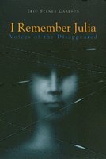

<body bgcolor="#FFFFFF" text="#000000" link="#0000FF" vlink="#CC0000" alink="#CC0000"><center><hr width="350" size="1" align="center" noshade>A powerful and moving remembrance of a young doctor who was disappeared during the Argentine "Dirty War"<hr width="350" size="1" align="center" noshade><p><a href="https://cdcshoppingcart.uchicago.edu/Cart/ChicagoBook.aspx?ISBN=9781566394307&&PRESS=temple" target="_top">Buy this book!</a> | <a href="https://cdcshoppingcart.uchicago.edu/Cart/Cart.aspx?PRESS=temple" target="_top">View Cart</a> | <a href="https://cdcshoppingcart.uchicago.edu/Cart/Cart.aspx?PRESS=temple" target="_top">Check Out</a></p><p></p></center><!--none//--><h1>I Remember Julia</h1>
<H2>Voices of the Disappeared</H2>
<h3>Eric Stener Carlson</h3>
<P>cloth 1-56639-430-9 $89.50, Jun 96, <FONT COLOR=#990033>Out of Stock Unavailable</FONT>
<br>paper 1-56639-437-6 $30.95, Jun 96, <FONT COLOR=#990033>Available</FONT>
<BR> 240 pp
5.5x8.25
</P><P>In 1977 "Julia" became one of the 30,000 victims of Argentina's most recent military dictatorship. Julia was a young physician and mother-to-be kidnapped from a medical clinic and found years later in a clandestine grave along with 334 other corpses. Who were these thousands of victims? Who was Julia?
<P>By reconstructing the life of one victim, Eric Stener Carlson gives voice to the thousands of citizens who were "disappeared." Ironically, in doing so, he must use the pseudonym "Julia" for this young woman to protect the people she left behind. The pieces of Julia's story come together through the emotional and poignant memories of those who knew her--childhood friends and family, classmates and colleagues, an ex-lover, and fellow prisoners whose lives intersected with hers in the government torture centers. Interspersed between the personal testimonies are the voices of others who give her story a political and social context. They include a military general, a priest, a politician, a human rights activist, and a prosecuting attorney in the war crimes tribunal.
<P>Carlson creates a personalized account that addresses not only the atrocities of Argentina's Dirty War, but human rights transgressions throughout Latin America and the world. It is impossible to read this story and not come away with a profound sense of human tragedy and personal suffering associated with repressive government policies everywhere.
<BR>&nbsp;<h2>Excerpt</h2><P>Excerpt available at <a href="http://www.temple.edu/tempress">www.temple.edu/tempress</a></p>
<BR>&nbsp;<h2>Contents</h2><P>
<p>Acknowledgments
<br>Author's Introduction
<br>1. The Cemetery: Voice 1, Emilio Fermín Mignone
<br>2. Catalina: Voice 2, Father Luis Angel Farinello
<br>3. Graciela: Voice 3, Dr. Ester Saavedra
<br>4. Manuel: Voice 4, Uki Goñi
<br>5. The Clinic: Voice 5, María Adela Gard de Antokoletz
<br>6. Laura: Voice 6, Adolfo Pérez Esquivel
<br>7. Luciano: Voice 7, María Isabel Chorobik de Miriani
<br>8. Victoria: Voice 8, Dr. Jorge Reinaldo Vanossi
<br>9. Francisco: Voice 9, Luis Brandoni
<br>10. "El Angel": Voice 10, General Herberto Justo Auel
<br>11. Ana María: Voice 11, Dr Luis Gabriel Moreno Ocampo
<br>12. Silvina: Voice 12, Eduardo Rabossi
<br>Author's Epilogue
<br>Index
</P><BR>&nbsp;<H2>About the Author(s)</H2>
<table><tr><td valign="top"><img src="/tempress/authors/1250_au.gif" height="90" width="75"></td><td width="100%" valign="middle"><p><B>Eric Stener Carlson</b> is a Fellow of Physicians for Human Rights, working with the War Crimes Tribunal for the Former Yugoslavia in The Hague. He previously spent two years in Buenos Aires, Argentina, as a Fulbright Scholar conducting research and interviews for this book.</P></td></tr></table>
<BR><H2>Subject Categories</H2>
<p><A HREF="/tempress/latin.html" TARGET="_top">Latin American/Caribbean Studies</a>
<BR><A HREF="/tempress/philosophy.html" TARGET="_top">Philosophy and Ethics</a>
</p>
<p align="center"><a href="https://cdcshoppingcart.uchicago.edu/Cart/ChicagoBook.aspx?ISBN=9781566394307&&PRESS=temple" target="_top">Buy this book!</a> | <a href="https://cdcshoppingcart.uchicago.edu/Cart/Cart.aspx?PRESS=temple" target="_top">View Cart</a> | <a href="https://cdcshoppingcart.uchicago.edu/Cart/Cart.aspx?PRESS=temple" target="_top">Check Out</a></p><p><font face="Arial" size="1"><a href="copyright.html" onMouseOver="window.status='Web Copyright Policy';return true;" onMouseOut="window.status=''" title="Web Copyright Policy">&copy;</a> 2015 <a href="http://www.temple.edu" target="new" onMouseOver="window.status='Link to Temple University home page';return true;" onMouseOut="window.status=''" title="Link to Temple University home page">Temple University</a>. All Rights Reserved. http://www.temple.edu/tempress/titles/1250_reg.html</font></p>